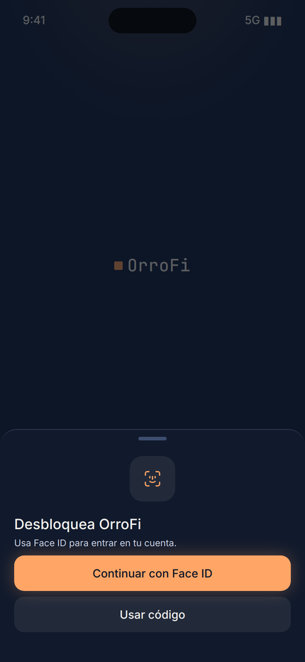
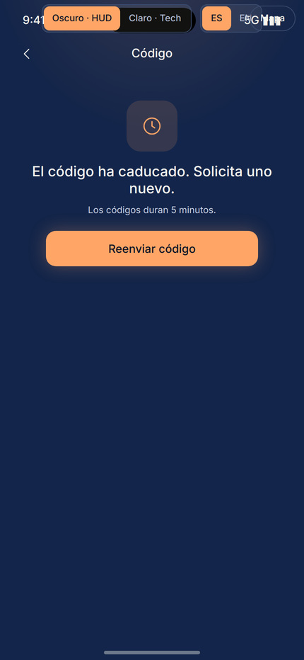
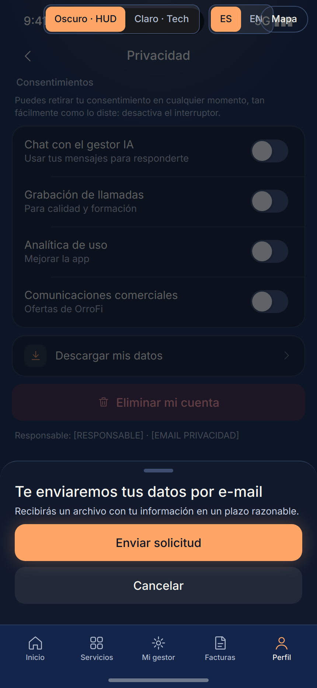
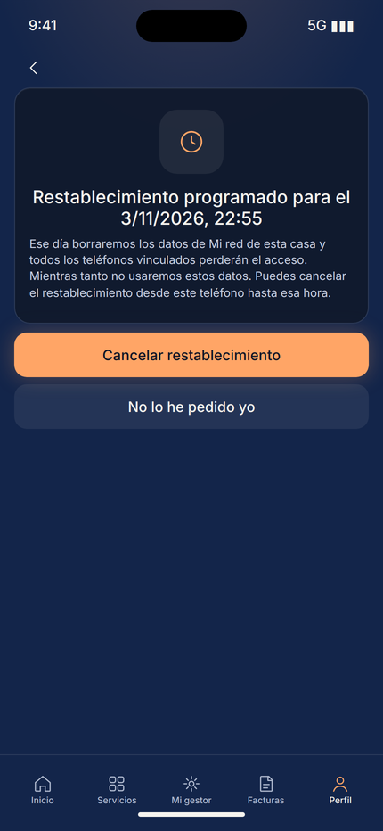
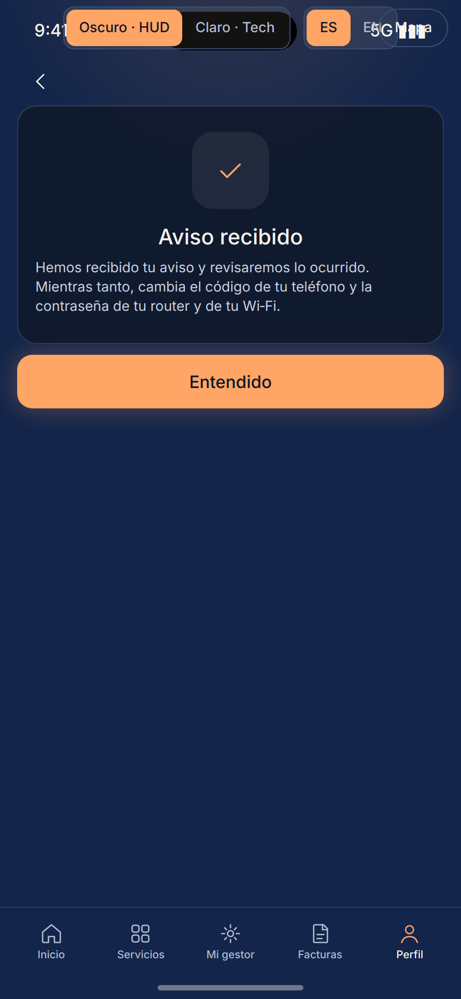
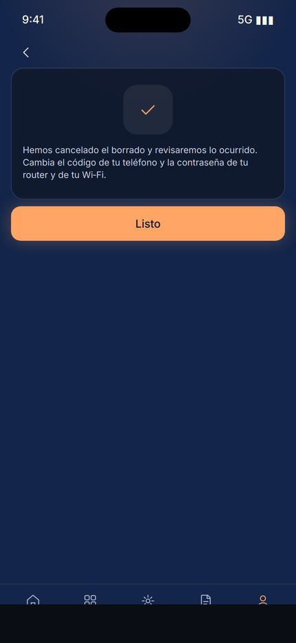

Face ID при открытии
Экран sh-faceid-open · Вход по Face ID

Здесь собраны экраны входа, приватности, удаления данных Mi red, сброса сети и сигнала о подозрительных действиях.
Контакт по данным: privacidad@orrofi.es. Вы вправе обратиться в испанское агентство AEPD.
Сайт не собирает данные через формы и не использует cookies. Хостинг GitHub Pages (GitHub, Inc., США) технически получает IP-адрес и сведения о браузере при открытии страниц. Если вы пишете нам на privacidad@orrofi.es, PADELADA WORLD SL использует ваше письмо только для ответа (ст. 6(1)(f) RGPD) и хранит его, пока нужно для ответа. Вы вправе получить доступ к данным, исправить, удалить или ограничить их, возразить против обработки и подать жалобу в AEPD (aepd.es). Полная политика конфиденциальности приложения появится до его запуска.
Экран sh-faceid-open · Вход по Face ID

Экран login · Вход по SMS

Экран login-code · Вход по SMS

Экран loginerr · Вход по SMS

Экран loginexp · Вход по SMS

Экран loginlock · Вход по SMS

Экран sh-nocode · Вход по SMS

Экран privacy · Приватность

Экран privsched · Приватность

Экран sh-delete · Приватность

Экран sh-deletecode · Приватность

Экран sh-deleteok · Приватность

Экран sh-export · Приватность

Экран rst-17a · Сброс Mi red

Экран rst-17b · Сброс Mi red

Экран rst-17c · Сброс Mi red

Экран rst-17d · Сброс Mi red

Экран rst-17e · Сброс Mi red

Экран rst-17f · Сброс Mi red

Экран rst-17g · Сброс Mi red

Экран rst-17h · Сброс Mi red

Экран rst-17i · Сброс Mi red

Экран rst-17j · Сброс Mi red

Экран rst-17k · Сброс Mi red

Экран rst-17l · Сброс Mi red

Экран rst-17m · Сброс Mi red

Экран rst-entry · Сброс Mi red

Экран rst-owner · Сброс Mi red

Экран rst-sh-bio · Сброс Mi red

Экран rst-sh-bio-c · Сброс Mi red

Экран rst-sms · Сброс Mi red

Экран rp-18a · Сигнал о чужих действиях

Экран rp-18b · Сигнал о чужих действиях

Экран del-16a · Удаление данных Mi red

Экран del-16a0 · Удаление данных Mi red

Экран del-16b · Удаление данных Mi red

Экран del-16b2 · Удаление данных Mi red

Экран del-16c · Удаление данных Mi red

Экран del-16d · Удаление данных Mi red

Экран del-16d2 · Удаление данных Mi red

Экран del-16e · Удаление данных Mi red

Экран del-16e2 · Удаление данных Mi red

Экран del-16f · Удаление данных Mi red

Экран del-16g · Удаление данных Mi red

Экран del-16h · Удаление данных Mi red

Экран del-entry · Удаление данных Mi red

Экран del-owner · Удаление данных Mi red

Экран del-sh-bio · Удаление данных Mi red